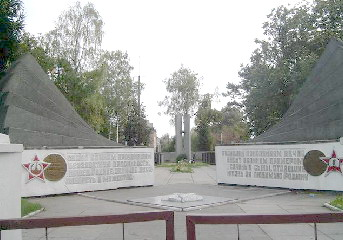

| Пришло письмо из г. Печора, Республика Коми. Александр Исламович Сайдалиев с радостью сообщает, что в электронной Книге Памяти Тверской области нашел своих дедов Рыбенкова Александра Павловича и Рыбенкова Михаила Павловича из дер. Поддубье Фировского района. И нужно бы порадоваться вместе с этим человеком за его новые знания о судьбах своих близких. Но когда видишь, как в Книге Памяти Тверской области увековечена память о них, становится грустно, досадно и стыдно за эти ущербные записи, за свою губернию, где для власть предержащих память о павших больше подходящий лозунг для юбилеев, чем внутреннее убеждение и реальные дела.
Вот эти записи:
РЫБЕНКОВ Александр Павлович род. 1906, дер. Поддубье. Призван в 1938. Рядовой, пропал без вести, май 1942. (Книга памяти, Бологовский район)
РЫБЕНКОВ Александр Павлович род. 1906, дер. Поддубье, Рождественский сельсовет. Призван в 1941. Красноармеец, Пропал без вести, май 1942. (Книга памяти, Фировский район)
РЫБЕНКОВ Михаил Павлович род. 1899, дер. Поддубье, Рождественский сельсовет. Призван в 1941. Красноармеец, умер от болезни, апрель 1945. Похоронен: г. Тапиау, Германия. (Книга памяти, Фировский район)
А.П. РЫБЕНКОВ увековечен в Книге Памяти дважды по Бологовскому и Фировскому районам. Почему указаны разные года призыва 1938 и 1941? Ведь в послевоенном от июля 1947 г. донесении Бологовского РВК указана точная дата призыва, вероятнее - мобилизации, 30 июня 1941 г. И пропал он без вести никак не в мае 1942 г., а раньше, так как последнее письмо от него пришло еще в феврале. К сожалению, документов воинских частей о судьбе Александра Павловича обнаружить не удалось, а по сему он так и будет оставаться в числе пропавших без вести.
РЫБЕНКОВ М.П., рядовой 51 отдельного саперного батальона умер от пневмонии в 290 СЭГ 28 апреля 1944 г. и действительно был похоронен на госпитальном кладбище в г. Тапиау, Восточная Пруссия. Но города с таким названием нет уже с 1946 г. Есть русский город Гвардейск в Калининградской области. Там в центре города на площади Победы в братской могиле советских воинов и покоятся ныне останки нашего земляка.
Сегодня уже неуместно ставить вопрос кто допустил такие ляпы в Книге Памяти Тверской области, которая составлялась в начале 90 - х годов прошлого века. Но вполне резонно родственники погибших и пропавших без вести спрашивают: кто, как и когда их будет исправлять. Ответа на эти вопросы нет. Нет, потому что власть никак не реагирует на многократные предложения нашего Фонда создать в области постоянно действующую редколлегию областной Книги Памяти. Не убеждает её, власть, и такой аргумент, что эти редколлегии работают постоянно в большинстве боевых регионов России, да и не только в боевых. Не очень её, нашу власть, волнует и то, что мы имеем самые приблизительные данные о количестве наших земляков ушедших на фронт, о количестве погибших, пропавших без вести, умерших от ран и болезней, погибших в плену, о потерях среди мирного населения, партизан и подпольщиков. А сколько уроженцев нашей области, сложивших головы на фронтах Великой Отечественной, еще совсем не увековечены даже приблизительно никто не знает. Получается, и знать не хотят.
Остается надеяться, что наступят лучшие времена. А пока в меру своих сил будем помогать людям достойно увековечивать память о их близких. |